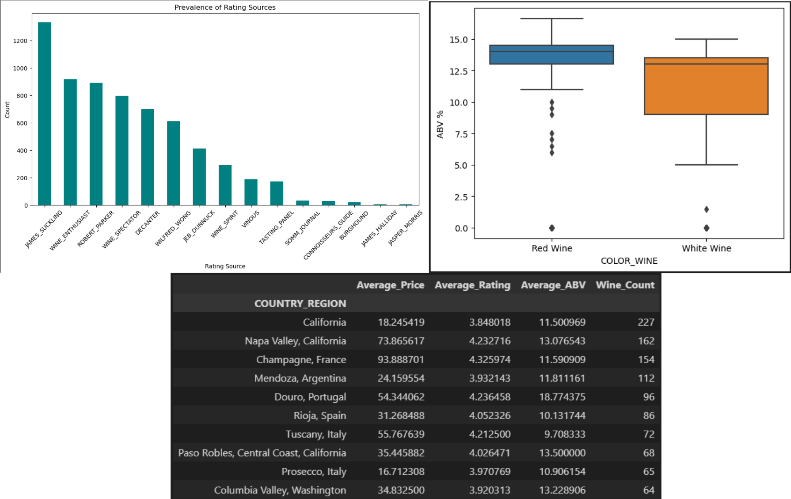

Python for Analytics
Python was the first language I learned when I returned to school. I quickly embraced it and immediately began finding uses in my projects. The following examples demonstrate a few ways in which I have been able to utilize these skills in my analytics.
Example 1: The Email Issues
At Allegion, I was part of the DevOps team responsible for developing and maintaining the application that powered manufacturing lines. When issues arose, an error report was logged in the database, and an email alert was sent to developers.
Noticing that some email data wasn't stored in the database, I wrote a Python script to extract, parse, and store the missing information in a table. I then created a report to track recurring issues affecting production.
This report played a key role in identifying the true cause of persistent line disruptions. While network issues were initially suspected, the data revealed that poor ERP archiving practices were slowing production processes.

Example 2: Jupyter Analysis
This project showcases data cleaning and analysis using Python and its libraries.
I used Pandas, Matplotlib, and Seaborn to generate a statistical report with visualizations, while markdown annotations provided key insights.
The entire project was conducted in a Jupyter Notebook using only Python.
